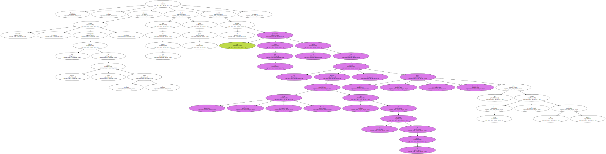
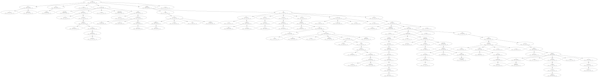
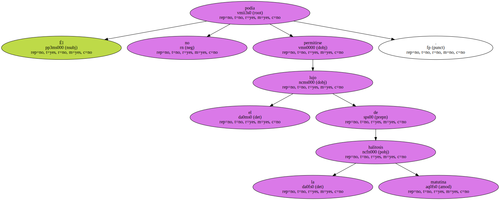
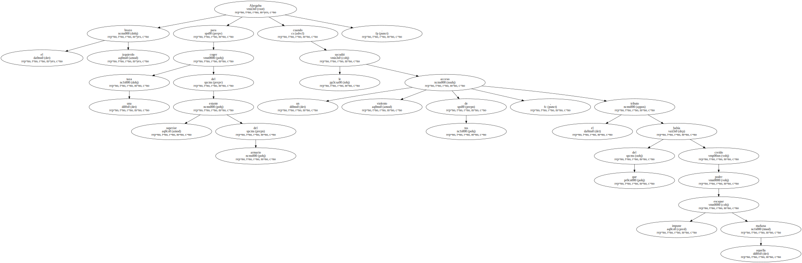
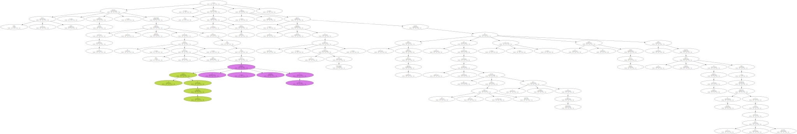
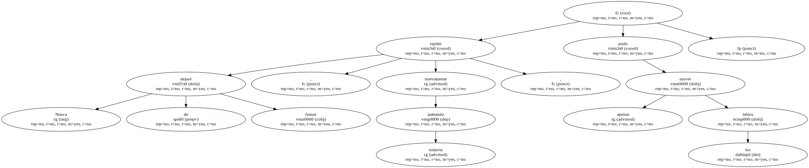
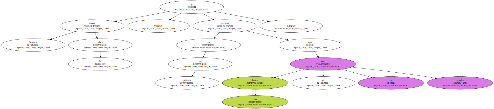
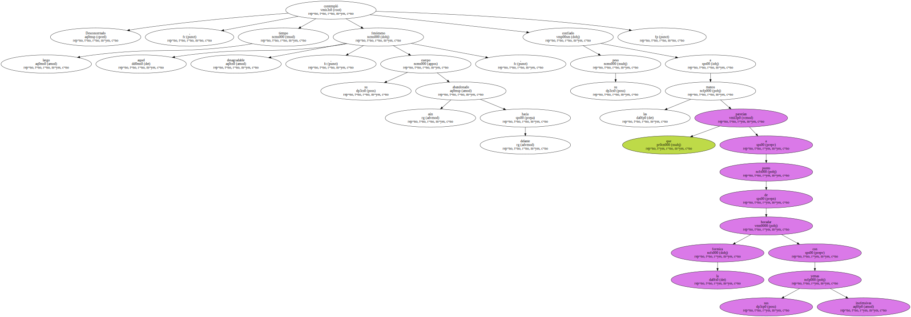
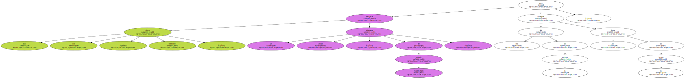

Después , mientras seguía sonriendo , contemplando dos hileras de dientes blancos , sanos , bellos , alargó una de sus manos hacia el pecho y acarició el espolón que proyectaba sobre su piel la huella de un esternón deforme como un arma agresiva e hiriente , una de las carcajadas de su cuerpo , aquel hueso burlón y desmadrado que había crecido hacia fuera y no hacia dentro.
Tocó el familiar bulto con cuidado , recorriendo sus aristas con las yemas de los dedos , contemplando la imagen que le devolvía el espejo y pensando que todo aquello ya no tenía remedio , que nada podía hacer ya por su cara , ni por su pecho , por esas piernas que no veía , pero sabía tan huesudas y separadas como las patas de un pollo mojado , y por esa carne blanquecina , fofa , que comenzaba a acumularse en torno a su cintura , a descolgarse hacia abajo arrastrando en su vértigo un ombligo progresivamente hondo , para añadir una nueva vejación , la de los años , a un cuerpo condenado de antemano , desde antes de existir , a ser feo.
Pero los dientes no , se repetía , la boca no.

Él no podía permitirse el lujo de la halitosis matutina.
Alargaba el brazo izquierdo para coger una taza del estante superior del armario cuando le sacudió un violento acceso de tos , el tributo del que había creído poder escapar impune aquella mañana.
Nunca dejaré de fumar , murmuró varias veces , imprimiendo a sus labios la monótona cadencia de una letanía , nunca dejaré de fumar , hasta que sintió que las paredes de sus pulmones se soldaban , cerrándose al aire , y ya no pudo escupir palabra alguna , sólo toser , expulsar los sólidos demonios de su pecho , un recinto insólitamente breve , tosiendo con la cabeza hundida entre los hombros , los ojos fijos en la grasa vieja que nivelaba como una pasta lisa y brillante el irregular perfil del suelo embaldosado , y los dos brazos tendidos hacia delante , sus manos empujando las frágiles puertas del armario de cocina como si pretendieran en realidad proyectarlo a través de la sucia pared alicatada.
Nunca dejaré de fumar , repitió nuevamente , jadeando todavía , apenas pudo mover los labios.
Entonces elevó la vista , y advirtió por primera vez que sus brazos ya no eran paralelos.
Desconcertado , contempló largo tiempo aquel desagradable fenómeno , su cuerpo aún abandonado hacia delante , confiado su peso a las manos que parecían a punto de horadar la formica con sus inofensivas yemas.
Los diez dedos , extendidos , dibujaban un diagrama familiar , de reconfortante simetría , pero más allá de la muñeca las líneas de sus brazos divergían.
